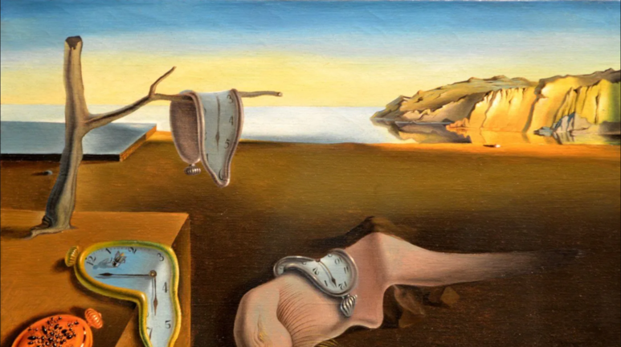
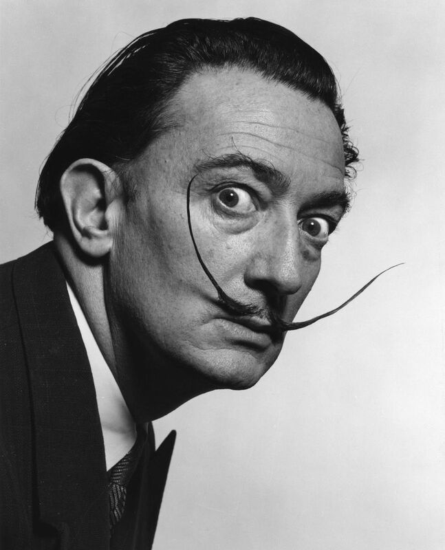

La persistencia de la memoria: el tiempo que se derrite
 Hay momentos que parecen eternos y hay recuerdos que se deshacen. En La persistencia de la memoria, Salvador Dalí no pintó relojes ni paisajes al azar, sino la percepción subjetiva del tiempo que habita en nuestra mente. Cada reloj blando, cada sombra estirada, cada línea surrealista es una metáfora de cómo la memoria y la conciencia se deforman, se estiran y se diluyen. Realizada en 1931, esta obra se convirtió en un ícono del surrealismo: un puente entre la lógica aparente del mundo y los laberintos del subconsciente.
El artista que soñaba despierto
Salvador Dalí nació en 1904 en Figueres, España, y vivió 84 años de creatividad desbordante. Su vida estuvo marcada por un deseo constante de explorar los límites de la realidad, la percepción y el arte mismo. Dalí combinaba una técnica académica impecable con una imaginación radical; sus obras parecen fotografías de sueños imposibles. No pintaba lo que veía, sino lo que sentía, lo que imaginaba y lo que intuía en lo más profundo de su mente, transformando lo cotidiano en algo extraordinario y perturbador.
Un escenario suspendido entre lo tangible y lo imaginario.
En La persistencia de la memoria, Dalí nos coloca en un paisaje costero que parece conocido y, al mismo tiempo, completamente irreal. Las sombras largas y la luz cálida evocan la tranquilidad del atardecer, pero los relojes que se derriten contradicen cualquier sensación de normalidad. Cada elemento tiene un propósito: el paisaje representa la solidez de la realidad, mientras que los relojes blandos simbolizan cómo el tiempo y la memoria se deforman dentro de nuestra mente. Incluso la pequeña criatura amorfa en el centro sugiere la fragilidad y la fluidez del ser, recordándonos que la realidad no siempre es lo que percibimos. 
El tiempo como materia maleable
Dalí nos invita a cuestionar nuestra percepción del tiempo: los relojes no marcan horas, se derriten, caen y se doblan como si fueran de cera. Este acto pictórico rompe con la lógica rígida del mundo, recordándonos que el tiempo es subjetivo, relativo y profundamente ligado a la memoria. La obra refleja cómo los recuerdos pueden distorsionarse, cómo los momentos importantes pueden alargarse o desvanecerse, y cómo el inconsciente da forma a nuestra experiencia del tiempo de manera única e inesperada.
La atención al detalle y el simbolismo
Dalí no dejó nada al azar: cada reloj, cada sombra y cada textura tiene un significado.
La calma aparente del mar contrasta con la inquietud de los relojes blandos; el árbol seco que sostiene uno de ellos parece sostener fragmentos de nuestra memoria; la criatura central, que algunos interpretan como un autorretrato, representa el yo que observa y siente el paso del tiempo.
Incluso la precisión de los objetos sólidos nos recuerda que, aunque nuestra mente juegue con la realidad, siempre estamos anclados a ella de alguna manera.
Entre lo personal y lo universal
Hoy,La persistencia de la memoria sigue siendo un espejo de nuestra experiencia interior. Cada espectador puede verse reflejado en la obra, recordando momentos que parecieron eternos o recuerdos que se desvanecieron como relojes blandos. Dalí nos enseña que la percepción, la memoria y el tiempo son maleables y subjetivos, y que el arte puede capturar esas emociones con una fuerza que ninguna palabra puede igualar. La pintura no solo representa un concepto, sino que provoca una experiencia: contemplarla es sumergirse en los rincones más extraños y profundos de la mente humana.